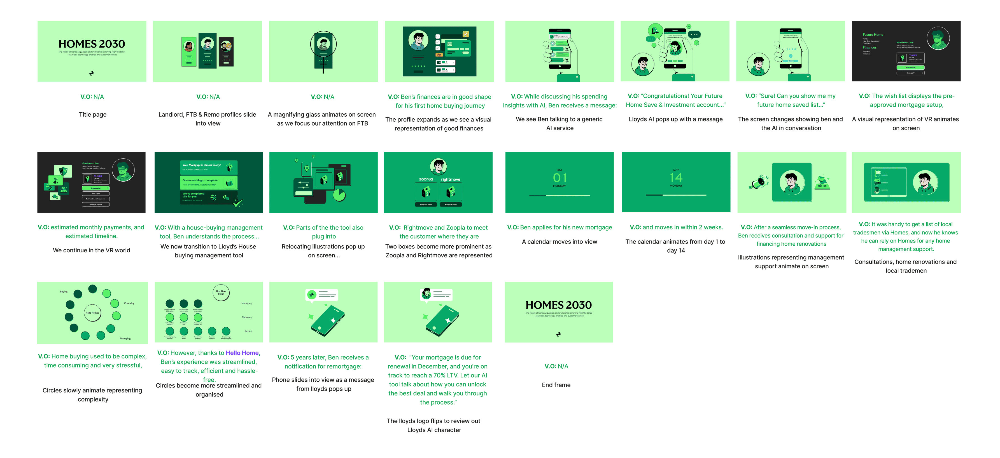
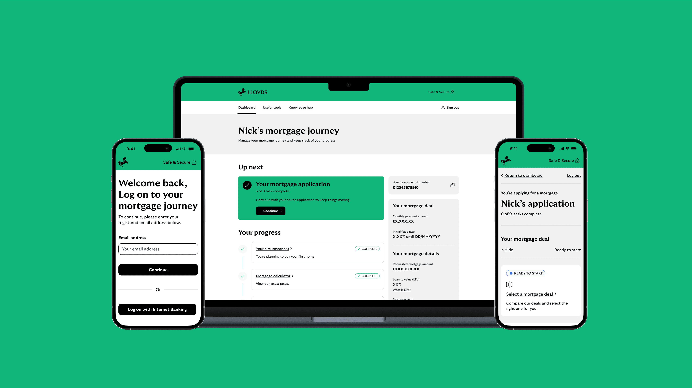

Designing AI-enabled future experience for 2030—speculative design and strategic storytelling to shape Commercial Banking's customer vision and guide executive strategy.
Operating as an in-house design agency, the team ran 3-week sprints across different business areas — each one producing a future experience vision to align leaders and seed downstream product thinking.
Topics varied widely depending on the brief, spanning retail and business banking moments such as home buying, shopping experiences, and growing a business in future contexts.
The goal
Create a future-facing 2030 experience vision that would align teams across Commercial, Data, AI, Design, and Product on a single narrative.
🤖
Demonstrate how AI can make business financial management automated, proactive, and seamless
🎯
Show a realistic but aspirational view of the customer journey for 2030
🎬
Produce a conceptual video + strategic deck suitable for ExCo-level provocation and ideation
Design principles established
The vision was anchored around five foundational principles: contextual, conversational, proactive, composable, and invisible—ensuring AI feels natural rather than intrusive.
My role
As Product Designer on the Design Futures team, I played a role of a core narrative, UX, and concept-definition lead for the entire vision sprint.
Core responsibilities
✓ Created and maintained Figma/FigJam spaces for immersion, ideation, and storyboard development
✓ Crafted and iterated the storyline and future customer scenario
✓ Led feedback integration from Design Leads, researchers, and stakeholders
✓ Facilitated alignment sessions and clarified narrative or product logic for contributors
✓ Pinpointed future banking moments and AI-supported tasks to strengthen provocation
Process
Immersion & foundational setup
Established the vision immersion board and facilitated workshops to align the team around core research, early design principles, and the target persona.
Cross-team concepting
Collaborated with Experience Design and Applied Science to define barriers to business growth and identify high-value "AI-intervention" points in the customer lifecycle.
Storyboarding & narrative design
Facilitated cross-departmental synthesis through iterative storyboarding to align diverse future strategies into a single narrative anchored by strategic touchpoints.
Business customer sprint storyboard — illustrating the BCB 2030 vision narrative across key moments in Hannah's day as an SME Finance Director. Contents intentionally blurred to protect confidential internal materials.
"The narrative had to feel human-centered while showcasing technical possibility—bridging aspiration with feasibility."

Homes 2030 storyboard — frame-by-frame narrative design for the Lloyds Homes vision video, following Ben's first home buying journey through an AI-enabled mortgage experience.

Lloyds Homes vision concept — speculative UI showing an integrated mortgage management experience across mobile and desktop, guiding customers from application through to completion.
Visual & UI concept integration
Worked with UI designers to integrate screens into the vision video, ensuring visual coherence and technical plausibility.
Synthesis & production
Co-led the production of the provocative 2030 vision video and strategic deck, ensuring version control and content accuracy across evolving concepts and UI integrations.
Stakeholder review & iteration
A vision sprint isn't a linear path from research to a video. This framework names the four moves the team made to keep a 2030 story anchored — desirable enough to provoke leadership, plausible enough to act on — and the handover that lets each business unit carry it forward.
The vision-sprint framework — five phases across a three-week sprint, with client co-creation and stakeholder alignment running through the process.
Participated in multiple feedback loops with leadership teams, audit teams, and Product/Tech stakeholders to refine the narrative and strengthen the strategic proposition.
My impact
Anchored the strategic vision
My work on the persona and scenario ensured the 2030 vision was cohesive, meaningful, and grounded in human-centric research.
Created cross-functional clarity
Provided the structure and narrative logic that enabled rapid, high-quality collaboration across diverse teams (Design, Product, Data, Applied Science).
Elevated the proposition
By integrating specific merchant-services and AI-driven workflows, I moved the concept beyond generic AI storytelling into a tangible business strategy.
Drove executive interest
The final assets were presented to ExCo and Group GenAI leadership, successfully generating heightened interest and follow-on strategic asks for the Design Futures team.
Outcome
The 2030 Vision video and supporting deck were produced and shared with ExCo and Group GenAI leadership as a provocation tool, shaping ideation for future Commercial AI capabilities.
The project successfully aligned disparate teams around a unified future narrative and established foundational principles that continue to guide product strategy discussions within Business & Commercial Banking.
Regenerated UX from vibe-coding
Customer–Relationship Manager interaction for AI SaaS vision — future business banking experience for mid-corporate customers.
Customer
Hannah's AI-enabled dashboard — customer-side view of the 2030 business banking experience, regenerated through vibe-coding from the original vision concepts.
Relationship Manager
Rob's relationship manager dashboard — colleague-side view showing how AI surfaces proactive insights and supports mid-corporate customer conversations in 2030.
Next Project
PayPoint Cash Deposit
Enabling customers to deposit cash at local shops—designing an inclusive service for vulnerable customers.